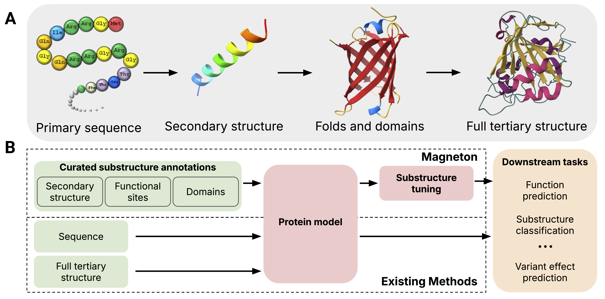
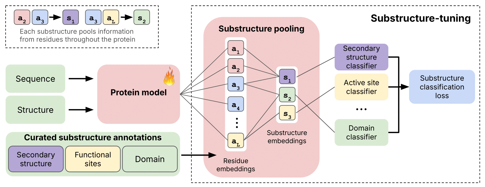
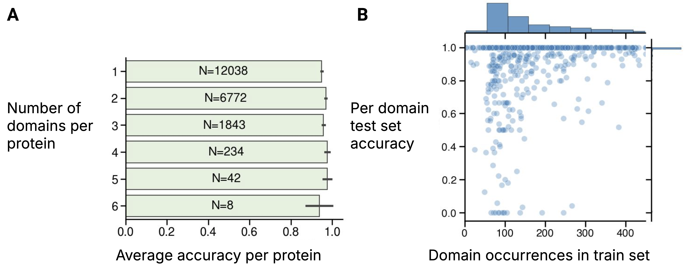

Greater than the Sum of Its Parts: Building Substructure into Protein Encoding Models
1MIT 2Harvard University
*Equal contribution
Protein representation learning has advanced rapidly with the scale-up of sequence and structure supervision, but most models still encode proteins either as per-residue token sequences or as single global embeddings. This overlooks a defining property of protein organization: proteins are built from recurrent, evolutionarily conserved substructures that concentrate biochemical activity and mediate core molecular functions. Although substructures such as domains and functional sites are systematically cataloged, they are rarely used as training signals or representation units in protein models.
We introduce Magneton, an environment for developing substructure-aware protein models. Magneton provides (1) a dataset of 530,601 proteins annotated with over 1.7 million substructures spanning 13,075 types, (2) a training framework for incorporating substructures into existing protein models, and (3) a benchmark suite of 13 tasks probing representations at the residue, substructural, and protein levels.
Using Magneton, we develop substructure-tuning, a supervised fine-tuning method that distills substructural knowledge into pretrained protein models. Across state-of-the-art sequence- and structure-based models, substructure-tuning improves function prediction, yields more consistent representations of substructure types never observed during tuning, and shows that substructural supervision provides information that is complementary to global structure inputs. The Magneton environment, datasets, and substructure-tuned models are all openly available.
Proteins organize hierarchically from primary sequence through secondary structure to folds, domains, and full tertiary structure. Magneton bridges the gap between sequence-level and structure-level representations by explicitly incorporating substructural annotations.

Figure 1: Overview of protein structure and the Magneton environment. (A) Proteins are built from modular substructures that assemble into full structures. (B) Magneton leverages decades of substructure research to provide an environment for developing and evaluating substructure-aware models.
Substructure-tuning pools residue embeddings into substructure representations and trains classifiers to predict substructure types, distilling this knowledge into the base protein model.

Figure 2: Overview of using Magneton for substructure-tuning. Given a pre-trained protein model, substructure-tuning first pools residue-level embeddings to create substructure representations, which are then used for supervised finetuning via substructure type-specific classifier heads.
530,601 proteins with 1.7M+ substructure annotations across 13,075 types from InterPro and SwissProt.
Easy integration with state-of-the-art models including ESM2, ESM-C, SaProt, and ProSST.
13 evaluation tasks spanning residue-, substructure-, and protein-level predictions.
Substructure-tuning achieves high accuracy across proteins with varying numbers of domains and generalizes well even for rare domain types.

Figure 3: (A) Domain classification uses local cues. Even within proteins containing multiple domains, classification accuracy remains high for all contained domains. Labels within bars show the number of test set proteins containing that number of domains. (B) Domain classification accuracy as a function of training set representation. Results shown for ESM-C 300M.
Our dataset comprises 530,601 proteins from SwissProt with over 1.7 million substructure annotations (37 million including secondary structure) across six substructure classes. After filtering for substructures occurring at least 75 times, we retain 2,542 unique types covering 1.56M occurrences. The median protein span varies by substructure class: homologous superfamilies span ~50% of proteins (137 AA), domains ~35% (127 AA), while functional sites like active sites span only ~3.5% (12 AA).
| Substructure class | Pre-filter | Post-filter | Median protein span | ||
|---|---|---|---|---|---|
| Unique types | Total occurrences | Unique types | Total occurrences | ||
| Homologous superfamily | 2,978 | 1.09M | 1,133 | 1.05M | 50% (137 AA) |
| Domain | 9,133 | 389K | 917 | 301K | 34.8% (127 AA) |
| Conserved site | 739 | 175K | 356 | 162K | 5.18% (16 AA) |
| Binding site | 67 | 20.1K | 48 | 19.0K | 4.28% (16 AA) |
| Active site | 132 | 31.1K | 82 | 29.2K | 3.47% (12 AA) |
| Secondary structure | 8 | 35.2M | 8 | 35.2M | 0.94% (3.4 AA) |
| Total (w/o secondary structure) | 13,075 | 1.71M | 2,542 | 1.56M | — |
Table 1: Summary of Magneton substructure dataset (SwissProt subset). Before and after refer to filtering out rare substructures. Median protein span is the median length of a type of substructure, expressed as a percentage of the protein and as an absolute amino acid count.
| Scale | Task | Type | Metric |
|---|---|---|---|
| Interaction | Human PPI Prediction | Binary | Accuracy |
| Contact Prediction | Binary | Precision@L | |
| Protein | Gene Ontology (BP, CC, MF) | Multilabel | Fmax |
| Enzyme Commission | Multilabel | Fmax | |
| Subcellular Localization | Multiclass | Accuracy | |
| Thermostability | Regression | Spearman's ρ | |
| Residue | Variant Effect Prediction | Regression | Spearman's ρ |
| Binding Residue Classification | Multilabel | Fmax | |
| Functional Site Prediction | Binary | AUROC |
Table 2: Evaluation tasks contained within Magneton. Grouped by the scale of structural representation they interrogate.
Base protein models can effectively represent substructures, with macro-averaged accuracy exceeding 0.88 across all models and substructure types. Structure-aware models (SaProt, ProSST) generally outperform sequence-only models, particularly for secondary structure classification. Substructure-tuning (+ST) further improves performance, with notable gains in homologous superfamily and secondary structure classification.
| Model | Homologous superfamily | Domain | Conserved site | Binding site | Active site | Secondary structure |
|---|---|---|---|---|---|---|
| ESM2-150M | 0.899 | 0.969 | 0.988 | 1.000 | 0.995 | 0.827 |
| +ST | 0.925 | 0.983 | 0.991 | 0.999 | 0.994 | 0.916 |
| ESM2-650M | 0.926 | 0.982 | 0.986 | 1.000 | 0.995 | 0.892 |
| +ST | 0.902 | 0.967 | 0.986 | 1.000 | 0.996 | 0.938 |
| ESM-C 300M | 0.913 | 0.962 | 0.990 | 0.998 | 0.994 | 0.863 |
| +ST | 0.946 | 0.982 | 0.983 | 0.999 | 0.996 | 0.757 |
| ESM-C 600M | 0.919 | 0.975 | 0.992 | 0.977 | 0.994 | 0.891 |
| +ST | 0.907 | 0.966 | 0.993 | 0.997 | 0.996 | 0.927 |
| SaProt (650M) | 0.916 | 0.967 | 0.992 | 0.999 | 0.996 | 0.955 |
| +ST | 0.925 | 0.980 | 0.993 | 0.999 | 0.996 | 0.972 |
| ProSST-2048 | 0.888 | 0.945 | 0.995 | 0.996 | 0.993 | 0.927 |
| +ST | 0.879 | 0.976 | 0.991 | 0.991 | 0.995 | 0.961 |
Table 3: Comparison of substructure classification performance. Performance on the diagnostic task of classifying substructures given their annotated residues, for base and substructure-tuned (+ST) models. All values are macro-averaged accuracy.
We explored different combinations of substructure types for tuning ESM-C 300M. Key findings: (1) Function-related tasks (EC, GO:MF, GO:BP) consistently improve with substructure-tuning, with EC Fmax increasing from 0.688 to 0.815 with the _DCBA_ configuration. (2) Localization tasks show neutral to negative effects. (3) Even small substructures like active sites (median 12 AA) provide significant benefits. (4) Secondary structure alone (S) degrades performance. Based on these results, we selected the combination of active site, binding site, and conserved site as the substructure-tuning configuration for use in the full set of models and benchmarks.
| Substructures used | Fmax | Localization (Accuracy) | Thermostability (Spearman's ρ) |
Zero-shot DMS (Spearman's ρ) |
||||
|---|---|---|---|---|---|---|---|---|
| EC | GO:BP | GO:CC | GO:MF | Binary | Subcellular | |||
| None | 0.688 | 0.307 | 0.416 | 0.429 | 0.871 | 0.703 | 0.648 | 0.432 |
H_____ |
0.805 | 0.312 | 0.395 | 0.518 | 0.851 | 0.632 | 0.662 | 0.308 |
_D____ |
0.776 | 0.307 | 0.403 | 0.501 | 0.811 | 0.640 | 0.666 | 0.340 |
__C___ |
0.749 | 0.318 | 0.398 | 0.491 | 0.870 | 0.706 | 0.661 | 0.402 |
___B__ |
0.745 | 0.315 | 0.415 | 0.478 | 0.852 | 0.686 | 0.663 | 0.423 |
____A_ |
0.794 | 0.318 | 0.403 | 0.518 | 0.851 | 0.639 | 0.663 | 0.340 |
_____S |
0.618 | 0.297 | 0.379 | 0.381 | 0.823 | 0.587 | 0.612 | 0.264 |
HD____ |
0.774 | 0.316 | 0.388 | 0.500 | 0.847 | 0.606 | 0.639 | 0.302 |
H____S |
0.765 | 0.297 | 0.395 | 0.466 | 0.883 | 0.651 | 0.644 | 0.346 |
HD___S |
0.754 | 0.318 | 0.413 | 0.473 | 0.868 | 0.633 | 0.658 | 0.350 |
H_CBA_ |
0.800 | 0.322 | 0.389 | 0.515 | 0.857 | 0.611 | 0.663 | 0.340 |
_D___S |
0.751 | 0.308 | 0.384 | 0.462 | 0.872 | 0.646 | 0.643 | 0.369 |
_DCBA_ |
0.815 | 0.329 | 0.395 | 0.525 | 0.851 | 0.662 | 0.659 | 0.369 |
__CBA_ |
0.761 | 0.325 | 0.403 | 0.488 | 0.879 | 0.681 | 0.660 | 0.410 |
___BA_ |
0.740 | 0.319 | 0.406 | 0.467 | 0.841 | 0.677 | 0.656 | 0.418 |
__CBAS |
0.719 | 0.313 | 0.393 | 0.453 | 0.839 | 0.666 | 0.636 | 0.379 |
HDCBAS |
0.760 | 0.315 | 0.383 | 0.457 | 0.832 | 0.624 | 0.640 | 0.359 |
Table 4: Comparison of substructure-tuning configurations. Performance across tasks for ESM-C 300M with a range of substructure-tuning configurations. For each configuration, the substructures used are indicated by the presence of that substructure type’s single-letter code: H=Homologous superfamily, D=Domain, C=Conserved site, B=Binding site, A=Active site, S=Secondary structure; an underscore (_) means that substructure type was not used.
Substructure-tuning consistently improves function prediction across all tested models. Notable improvements include: SaProt EC Fmax from 0.778 to 0.839, ESM-C 600M GO:MF from 0.436 to 0.527, and ESM-C 300M EC from 0.688 to 0.761. Importantly, these gains persist for structure-aware models (SaProt, ProSST), demonstrating that substructural information is complementary to global structure. Localization tasks show mixed effects, with some models improving (ESM2-650M) while others decline slightly.
| Model | Fmax | Localization (Accuracy) | Thermostability (Spearman's ρ) |
Human PPI (AUROC) |
||||
|---|---|---|---|---|---|---|---|---|
| EC | GO:BP | GO:CC | GO:MF | Binary | Subcellular | |||
| ESM2-150M | 0.727 | 0.316 | 0.416 | 0.441 | 0.869 | 0.694 | 0.627 | 0.933 |
| +ST | 0.742 | 0.324 | 0.415 | 0.473 | 0.866 | 0.679 | 0.582 | 0.919 |
| ESM2-650M | 0.755 | 0.319 | 0.431 | 0.486 | 0.876 | 0.710 | 0.643 | 0.939 |
| +ST | 0.745 | 0.321 | 0.440 | 0.534 | 0.895 | 0.749 | 0.655 | 0.935 |
| ESM-C 300M | 0.688 | 0.307 | 0.416 | 0.429 | 0.871 | 0.703 | 0.648 | 0.917 |
| +ST | 0.761 | 0.325 | 0.403 | 0.488 | 0.879 | 0.681 | 0.660 | 0.933 |
| ESM-C 600M | 0.701 | 0.312 | 0.403 | 0.436 | 0.863 | 0.713 | 0.668 | 0.927 |
| +ST | 0.780 | 0.319 | 0.385 | 0.527 | 0.872 | 0.635 | 0.667 | 0.902 |
| SaProt (650M) | 0.778 | 0.326 | 0.453 | 0.538 | 0.887 | 0.784 | 0.692 | 0.952 |
| +ST | 0.839 | 0.339 | 0.446 | 0.584 | 0.896 | 0.741 | 0.697 | 0.932 |
| ProSST-2048 | 0.778 | 0.317 | 0.426 | 0.522 | 0.878 | 0.693 | 0.686 | 0.925 |
| +ST | 0.791 | 0.314 | 0.420 | 0.567 | 0.853 | 0.683 | 0.648 | 0.883 |
Table 5: Protein-level task performance for base models and models with substructure-tuning (+ST).
Residue-level tasks show mixed results with substructure-tuning. Binding residue prediction improves for ESM-C models but decreases for others. Functional site prediction remains relatively stable. Contact prediction shows minor decreases across most models. Variant effect prediction (zero-shot) consistently decreases with substructure-tuning, suggesting the tuning may bias models toward coarser-grained features at the expense of fine residue distinctions needed for variant effect prediction.
| Model | Binding residue (Fmax) |
Functional site (AUROC) | Contact Prediction (Precision@L) | Variant Effect (Spearman's ρ) |
|||
|---|---|---|---|---|---|---|---|
| Binding | Catalytic | Short | Medium | Long | |||
| ESM2-150M | 0.379 | 0.871 | 0.910 | 0.487 | 0.452 | 0.289 | 0.342 |
| +ST | 0.327 | 0.852 | 0.890 | 0.460 | 0.445 | 0.285 | 0.262 |
| ESM2-650M | 0.366 | 0.849 | 0.912 | 0.551 | 0.528 | 0.372 | 0.359 |
| +ST | 0.362 | 0.851 | 0.927 | 0.532 | 0.518 | 0.367 | 0.317 |
| ESM-C 300M | 0.367 | 0.851 | 0.923 | 0.339 | 0.364 | 0.174 | 0.432 |
| +ST | 0.411 | 0.866 | 0.910 | 0.350 | 0.374 | 0.180 | 0.410 |
| ESM-C 600M | 0.357 | 0.850 | 0.921 | 0.329 | 0.362 | 0.161 | 0.434 |
| +ST | 0.368 | 0.852 | 0.906 | 0.313 | 0.315 | 0.141 | 0.381 |
| SaProt (650M) | 0.423 | 0.891 | 0.923 | 0.788 | 0.747 | 0.697 | 0.457 |
| +ST | 0.400 | 0.871 | 0.924 | 0.765 | 0.726 | 0.647 | 0.405 |
| ProSST-2048 | 0.375 | N/A | N/A | N/A | N/A | N/A | 0.507 |
| +ST | 0.342 | N/A | N/A | N/A | N/A | N/A | 0.356 |
Table 6: Residue-level task performance for base models and models with substructure-tuning (+ST).
Substructure-tuning dramatically improves the clustering quality of substructure embeddings, as measured by silhouette scores. For ESM-C 300M, homologous superfamily scores improve from −0.183 to 0.339 (seen types) and 0.180 to 0.584 (unseen types). Crucially, improvements extend to substructure types never seen during training ("Unseen"), demonstrating that substructure-tuning encourages models to learn general features of functional substructures rather than memorizing specific type signatures. This generalization is observed across all substructure classes and both sequence-only (ESM-C) and structure-aware (SaProt) models.
| Model | Homologous superfamily | Domain | Conserved site | Binding site | Active site | |||||
|---|---|---|---|---|---|---|---|---|---|---|
| Seen | Unseen | Seen | Unseen | Seen | Unseen | Seen | Unseen | Seen | Unseen | |
| ESM-C 300M | −0.183 | 0.180 | −0.184 | 0.201 | 0.279 | 0.466 | 0.378 | 0.641 | 0.490 | 0.476 |
| +ST | 0.339 | 0.584 | 0.486 | 0.652 | 0.830 | 0.747 | 0.882 | 0.894 | 0.933 | 0.816 |
| SaProt (650M) | 0.079 | 0.301 | 0.122 | 0.412 | 0.534 | 0.623 | 0.613 | 0.796 | 0.714 | 0.701 |
| +ST | 0.478 | 0.684 | 0.554 | 0.717 | 0.796 | 0.764 | 0.843 | 0.938 | 0.912 | 0.866 |
Table 7: Silhouette scores for substructure types included (“seen”) and excluded (“unseen”) from training. Higher silhouette scores indicate tighter clustering of substructures within a type. “Seen” scores are generated using the Magneton test set proteins (i.e. “seen” refers to substructure types, not individual proteins).
| Model | Size | Type | Flash Attention |
|---|---|---|---|
| ESM2 | 150M, 650M, 3B | Sequence | Optional |
| ESM-C | 300M, 600M | Sequence | Optional |
| SaProt | 35M, 650M | Sequence + Structure | Optional |
| ProSST | 110M | Sequence + Structure | Unsupported |
If you find Magneton useful in your research, please cite our paper:
@article{calef2025greatersumpartsbuilding,
title={Greater than the Sum of Its Parts: Building Substructure into Protein Encoding Models},
author={Robert Calef and Arthur Liang and Manolis Kellis and Marinka Zitnik},
year={2025},
eprint={2512.18114},
archivePrefix={arXiv},
primaryClass={q-bio.QM},
url={https://arxiv.org/abs/2512.18114},
}